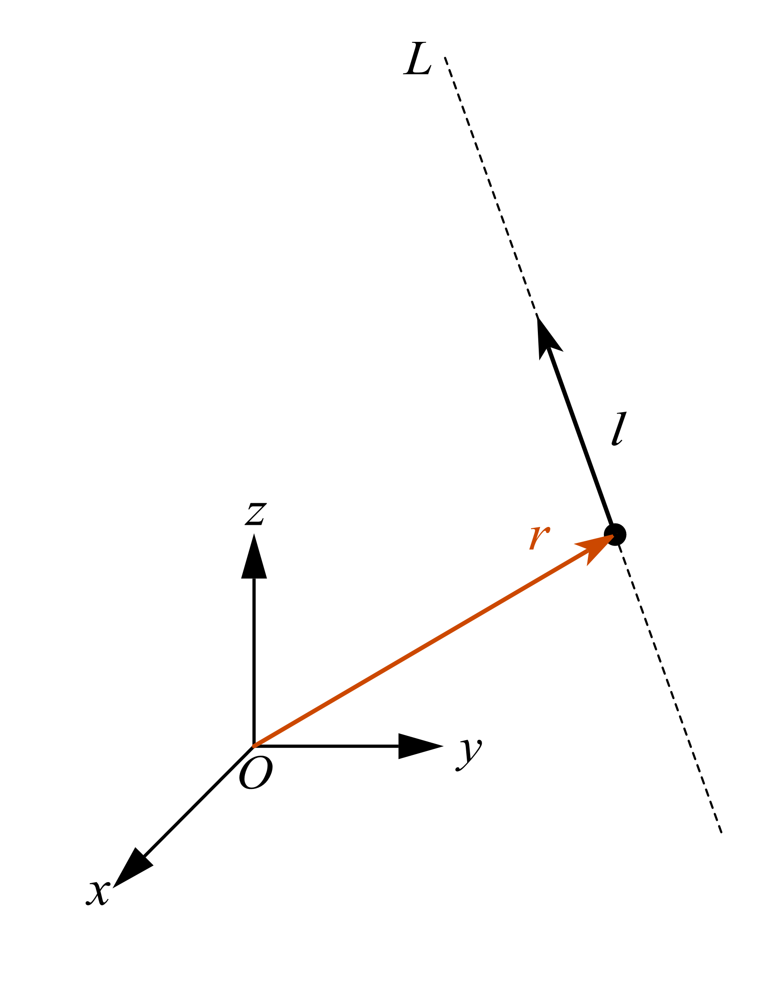
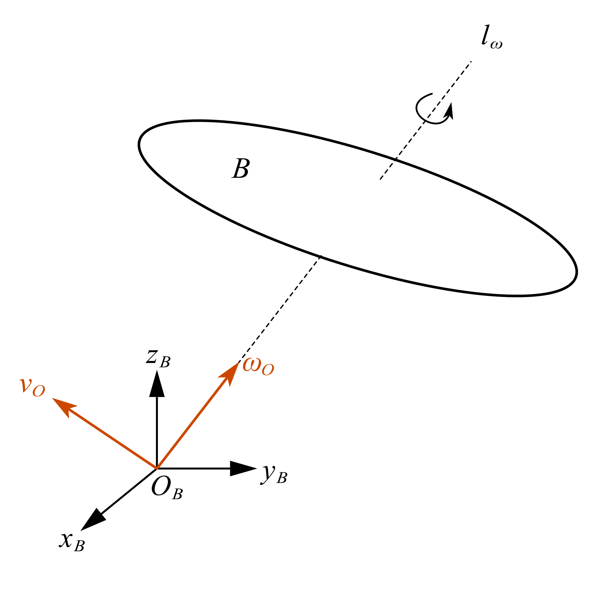

Part 2-空间向量及其性质
2.1-旋量几何基础¶
(1).线矢量¶
在三维欧氏空间中，一条有向直线不仅具有方向，还具有相对于坐标原点的位置。 因此，仅用一个三维方向向量并不能完整描述一条空间直线。

设空间中一条直线经过点 \(P\)，其位置向量为 \(r\in\mathbb{R}^3\)， 直线的方向向量为\(l\in\mathbb{R}^3, l\neq 0\)，定义向量
其中，\(l_0\) 称为直线 \(l\) 关于坐标原点的矩向量（moment vector）。 于是，可以将空间直线表示为一个六维向量
我们将其称为直线的线矢量。
(2).Plücker 坐标¶
对于空间直线的线矢量
其中 \(l\) 为直线的方向向量，\(l_0\) 为直线关于坐标原点的矩向量，则六个分量
称为空间直线的 Plücker 坐标。
由于
Plücker 坐标满足约束
同时，对于任意非零标量 \(\lambda\)，
二者表示同一条空间直线。因此，Plücker 坐标本质上是五维射影空间 \(\mathbb{P}^5\) 中满足上述约束的齐次坐标。
(3).Klein 型¶
设线矢量 \(L_1\)、\(L_2\) 为六维向量空间 \(\mathbb{R}^6\) 中的元素，\(l_1\)、\(l_2\) 与 \(l_{10}\)、\(l_{20}\) 分别表示两个线矢量的姿态向量和对坐标原点的矢矩，则对于三维空间中的任意线矢量 \(L_1\)、\(L_2\)，Klein 型可表示为
对于三维空间中的任意线矢量 \(L\)，Klein 型对应的二次型为
该式即为由 Klein 型的二次型定义的线矢量的自互易特性。同时，可将上述视为五维射影空间中的二阶约束，因此该式同时定义了五维射影空间中的超二次曲面，又称为 Klein 二次曲面
(4).旋量¶
在线矢量的基础上引入旋距（pitch），即可得到旋量。设旋量 \(S\in\mathbb{R}^6\) 表示为
其中，\(s\) 为旋量的主部，表示旋量轴线方向；\(s_0\) 为副部；\(r\) 为轴线上任意一点的位置向量；\(h\) 为旋距。
旋距可由主部与副部确定：
旋量轴线上距坐标原点最近一点的位置向量为
当坐标原点由 \(O\) 变换至 \(P\) 时，旋量主部 \(s\) 保持不变，副部变换为
其中，\(r_{PO}\) 为从新原点 \(P\) 指向原原点 \(O\) 的位置向量。由此可知，旋量的副部随坐标原点变化，而旋距 \(h\) 保持不变。
2.2-空间速度向量¶
自由空间内有一个刚体\(B\)，该刚体做空间内自由刚体运动。我们根据刚体运动的性质，将其分解为以速度\(v_O\)平动和绕着某个轴做转动和绕着过刚体的一个旋转轴\(l_{\omega}\)做旋转，该旋转轴相对于刚体的位置固定，并且随着刚体一起平动。我们在该刚体轴中找到一个点\(O_B\)作为刚体固连坐标系的原点，并且将速度矢量\(v_O\)和角速度矢量\(\omega_O\)固定在一点\(O_B\)上。如图所示：

到这里，我们已经用两个量描述了刚体 \(B\) 的瞬时运动：参考点 \(O_B\) 的线速度 \(v_O\)，描述刚体的平移；角速度 \(\omega_O\)，描述刚体的转动。
更重要的是，这两个量合在一起就足以确定刚体上任意一点的瞬时速度。对于刚体上的任意一点 \(P\)，都有
其中，\(r_{OP}\) 表示点 \(P\) 相对于参考点 \(O_B\) 的位置向量。
因此，从瞬时运动的角度看，一个刚体的运动可以由角速度 \(\omega_O\) 和参考点的线速度 \(v_O\) 共同刻画。三维空间中的角速度和线速度各包含 3 个分量，因此刚体的瞬时运动可以统一表示为一个 6 维向量：
我们称 \(\hat v\) 为刚体 \(B\) 的空间速度向量。
证明：空间速度向量为旋量
设空间速度向量为
证明其满足旋量形式
首先将 \(\mathbf v\) 分解为平行和垂直于 \(\boldsymbol{\omega}\) 的两部分：
因而
为使
设 \(\mathbf r\) 可由 \(\boldsymbol{\omega}\) 和 \(\mathbf v\) 构造为
则
与
比较可得
因此
故
满足旋量的标准形式，即为空间运动旋量。
又由于对任意 \(\lambda\)，
因此 \(\mathbf r+\lambda\boldsymbol{\omega}\) 表示同一条旋量轴。
2.2-空间力向量¶
在前面我们设定了空间速度向量，接下来我们在空间坐标系\(Frame\{{\mathcal{B}}\}\)上表示刚体\(B\)受到的力和力矩。我们假设有一个力\(f\)施加在刚体上，并且力\(f\)的方向沿着从刚体到坐标系\(Frame\{{\mathcal{B}}\}\)的原点\(O_B\)的方向。与此同时刚体\(B\)还受到过点\(O\)的力矩\(n_O\)的作用，那么对刚体上的任意一点\(P\)来说，表示其力矩如下：
我们可以使用以下的方式来表示刚体\(B\)的力：
这里就是刚体刚体\(B\)的空间力向量。
空间力向量
Contents
2.4-空间坐标的空间变换¶
这样，我们就得到了空间变换矩阵：
空间变换矩阵(Spatial Transformation Matrix)
假设有两个坐标系 \(Frame{\{\mathcal{A}\}}\) 和 \(Frame{\{\mathcal{B}\}}\) 。\(Frame{\{\mathcal{B}\}}\) 坐标系相对于 \(Frame{\{\mathcal{A}\}}\) 坐标系的几何关系由旋转矩阵 \(\mathbf{R} = {^A_B \mathbf{R}}\) 和位置向量 \({p} = {^A\vec{p}_{BORG}}\) (即\(Frame{\{\mathcal{B}\}}\)原点在\(Frame{\{\mathcal{A}\}}\)中的位置) 确定。 空间变换矩阵 \({{^A_B}\mathbf{X}}\) 用于将空间矢量从\(Frame{\{\mathcal{B}\}}\) 坐标系转换到 \(Frame{\{\mathcal{A}\}}\) 坐标系， 的定义如下：
其中： - \(\mathbf{R} = {^A_B\mathbf{ R}}\) 是 \(3 \times 3\) 旋转矩阵。 - \({p} = {^A\vec{p}_{BORG}}\) 是 \(3 \times 1\) 位置向量 - \([{p}]_{\times}\) 是位置向量 \({p}\) 对应的 \(3 \times 3\) 斜对称叉乘矩阵。
空间变换矩阵的性质
Contents
空间变换矩阵的对偶形式
Contents
2.5-空间向量的标量积¶
空间向量的标量积
基于空间矢量我们定义标量积，这个标量积的其中一个参数为空间速度向量，另外一个参数是空间力向量。两者相乘的结果是一个表示能量，功率或者类似的物理量。 我们给定一个空间速度向量\({\mathbf{m}}{\in}{{M}^{6}}\)和一个空间力向量\({\mathbf{f}}{\in}{{F}^{6}}\)，我们将这两个向量进行点乘运算，点乘运算可以表示为\({\mathbf{m}}{\cdot}{\mathbf{f}}\)或者\({\mathbf{f}}{\cdot}{\mathbf{m}}\)，这两者等价。
空间向量的标量积的物理含义
- 空间向量的标量积只有\({\mathbf{m}}{\cdot}{\mathbf{f}}\)或者\({\mathbf{f}}{\cdot}{\mathbf{m}}\)才具有物理含义，这个运算表示的是刚体运动的功率，能量等类似物理量。
- 运算\({\mathbf{f}}{\cdot}{\mathbf{f}}\)或者\({\mathbf{m}}{\cdot}{\mathbf{m}}\)没有任何物理含义。
2.6-空间向量叉乘¶
空间向量的叉乘
Contents
2.7-空间向量求导¶
空间向量的求导
Contents